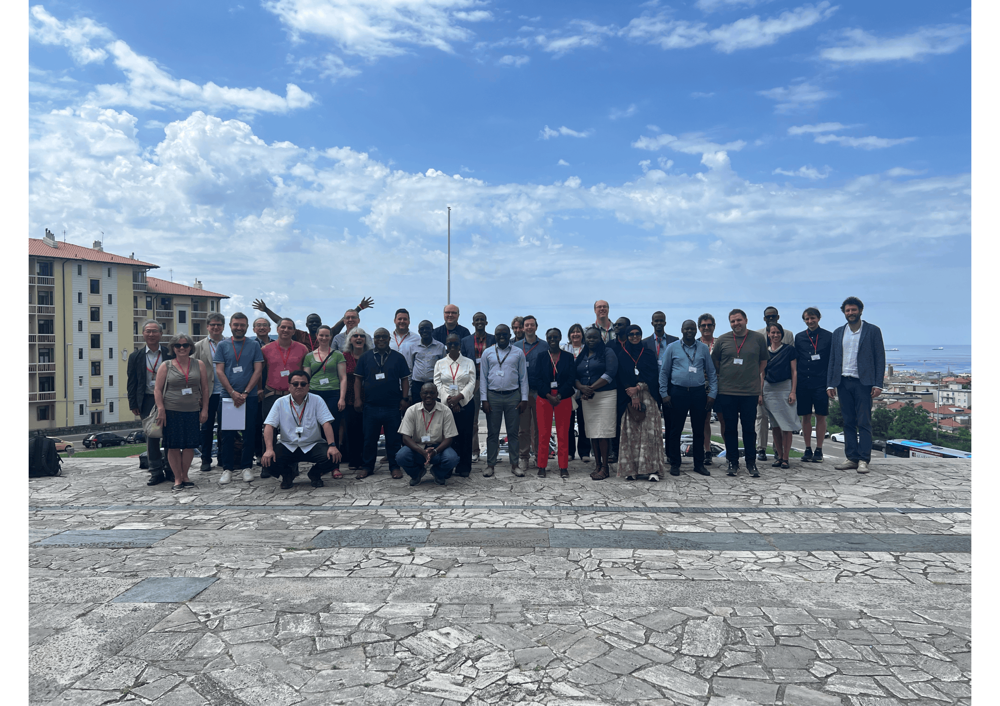
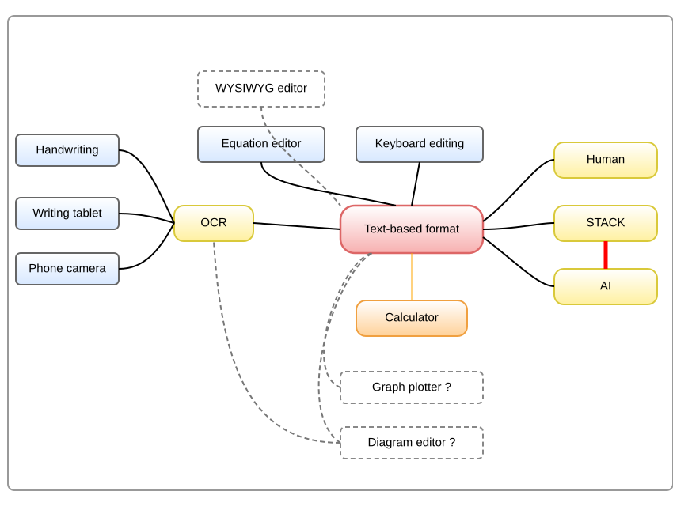
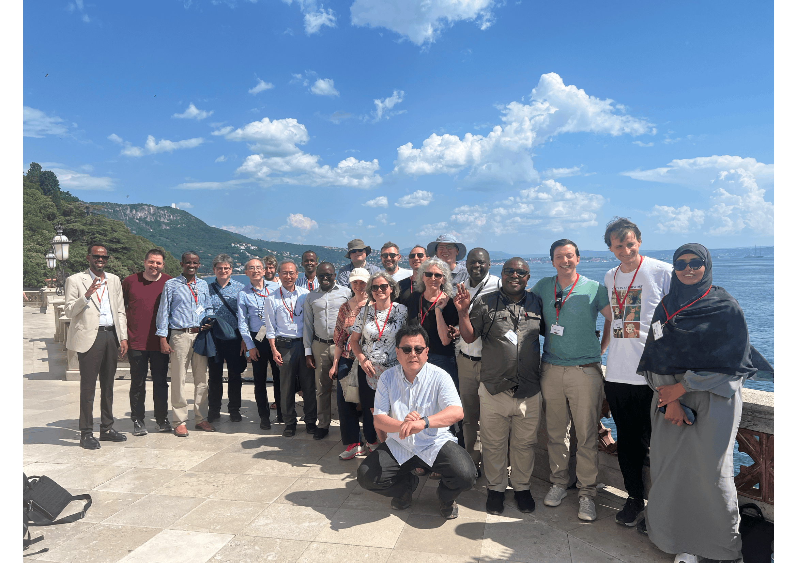
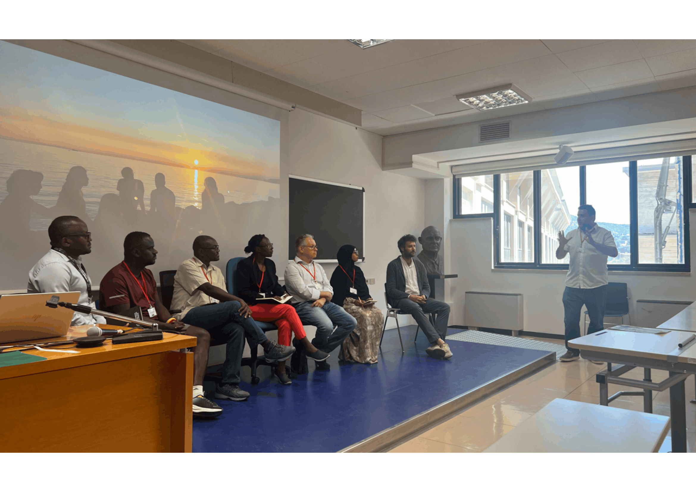
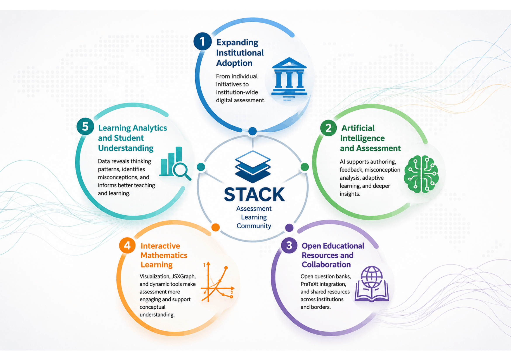
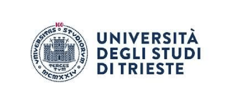
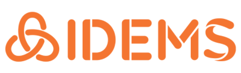
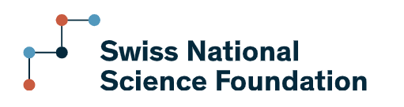

The 2026 Meeting of the STACK Community at the University of Trieste, Italy
Danilo Lewanski, Daniel Doz, Motognon Wastalas d'Assise Dogbalou, Zevick Juma Otieno
Introduction
The Meeting of the STACK Community 2026 was held at the University of Trieste, Italy, from 27 to 29 May 2026. In this meeting we had lecturers, highschool teachers, researchers, software developers, and local university staff coming together to discuss the future of STEM education and developing solutions to support education accross multiple international contexts.
At this conference we had 46 participants from 12 countries, with attendance from Kenya, Rwanda, and Somalia, alongside participants from Austria, Estonia, Finland, Germany, Italy, Japan, Slovenia, Switzerland, and the United Kingdom.
The conference was hosted at the Department of Mathematics, Informatics and Geosciences (MiGe) at the University of Trieste, in the Aula Magna Morin. In the conference we had research presentations, project showcases, panel discussions, workshops on STACK and JSXGraph authoring, and opportunities for informal networking and collaboration.

Highlights
Day 1: Community Experiences and Emerging Developments
The conference opened with remarks from Prof. Roberta Altin, Rector's Delegate for Cooperation and Development, Silvia Pallaver from the UniTS Teaching and Learning Centre and the DEH Alma project, and Federica Gori from the International Planning and Recruitment Office, who welcomed participants to join the University of Trieste's commitment to international cooperation, educational innovation, and collaboration with partner institutions across different topics.
After the opening session, Chris Sangwin gave a presentation on STACK, pointing out the future directions of the project, intended to allowing students to write full work solution on STACK, and future possibilities for AI-supported assessment. This is centered around a new text-based format for typing mathematics, and associated tools. This is described fully in a preprint http://arxiv.org/abs/2605.25276 of a paper co-authored with Dr Laura Kobel-Keller.

Vesna Perisic presented the long-standing use of STACK across mathematics programmes at the University of Southampton in both teaching and pedagogical research perspectives. Laura Kobel-Keller shared ongoing work on the development of STACK resources for analysis courses at ETH Zurich, while George-Ionut Ionita also shared ETH Zurich's experience of moving from formative use of STACK in small groups to full-scale digital examinations where they run their examinations online in STACK. Oksana Labanova presented an Estonia's institutional support model that has enabled the adoption of STACK beyond mathematics at TTK University of Applied Sciences in Tallin.
The afternoon session continued with presentations from Raphael Muller on the newly established German Centre for Digital STACK Tasks (DZdA), Wigand Rathmann on interactive optimization learning using JSXGraph, and Patrik Stilgenbauer on generating STACK questions through Python and R workflows. There was also a lecturers' panel discussion which brought together colleagues from the University of Trieste, MMUST, Maseno University, and the University of Edinburgh to share practical experiences of implementing STACK in their classrooms.
The day concluded with two practical workshops given by Chris Sangwin on STACK authoring and by Wigand Rathmann on the use of JSXGraph within STACK, demonstrating how interactive visualisations can enhance mathematical assessment and learning.
Day 2: Research and International Perspectives
The second day opened with Daniel Doz presenting research on student attitudes towards STACK at the University of Trieste, followed by Mojca Premus who shared experiences of using STACK to support student learning in Slovenian undergraduate mathematics courses at University of Lubljana.
Danilo Lewański shared his experience at the University of Trieste, showing how he uses STACK to support continuous assessment and feedback for students within the traditionally examination-focused Italian higher education system.
Zevick Juma Otieno presented findings from a cross-institutional study on STACK Integration at the University of Trieste (Italy), Masinde Muliro University of Science and Technology (MMUST), and Maseno University (Kenya). Wastalas d'Assise Dogbalou presented AI-supported approaches to adaptive assessment and personalised feedback, while Michele Pancera demonstrated an AI-assisted STACK authoring tool designed to support question development, debugging, and more efficient authoring workflows.

In the afternoon, participants visited Miramare Castle and the Trieste coastline for informal networking and discussion outside the conference venue and exploring the city. The day concluded with the conference social dinner.
Day 3: Future Directions
The final day began with a keynote from David Stern who pointed out the potential of STACK adding value across both low-resource and high-resource educational environments and challenged colleagues to think collectively about the future of assessment in the age of AI.
Georg Osang presented ongoing work on integrating STACK into PreTeXt textbooks, while George Lawi and his colleagues Everlyne Odero and Mary Okombo described MMUST's journey from adoption to institutionalisation of STACK and outlined plans for the proposed Africa STACK Centre. Federico Dogo presented broader applications of STACK beyond assessment into Physics through what he described as NeuroSTACK project, mainly focusing on assessment design in physics related courses to show concepts in situations where laboratory resources are limited.
Michael Obiero presented on the growth of the African STACK Community and recent developments in open digital textbooks with integrated STACK exercises. Matti Harjula and Stefano Luzzatto provided further examples of technical innovation and alternative applications of STACK.
The conference concluded with a panel session on cooperation and development and a meeting of the Hybrid Professionals Network.

Themes
From Adoption to Institutionalisation
One of the major themes was the growing transition of STACK from a tool used by individual lecturers to a system embedded within institutional teaching and assessment practices. Experiences presented by George Lawi, Michael Obiero, Oksana Labanova, George-Ionut Ionita, Vesna Perisic, and Danilo Lewanski identified that successful implementation requires more than technical infrastructure. Lecturer training, institutional support, question-bank development, and sustainable workflows were repeatedly identified as critical factors contributing to sccessful development and sustainable integration.
Examples ranged from MMUST's journey towards institutionalisation and the proposed Africa STACK Centre, to Maseno University's expanding use of STACK across courses from 2019 to 2026, ETH Zurich's implementation of large-scale digital examinations, and the University of Southampton's long-term integration of STACK across an entire mathematics degree programme.
Artificial Intelligence as a Support Tool
Artificial intelligence also featured throughout the meeting, reflecting its growing influence on education today. Rather than focusing on AI as a replacement for assessment, discussions centred on how it can support both lecturers and learners. Michele Pancera's AI-assisted authoring tool, Motognon Wastalas Dogbalou's work on adaptive assessment and misconception analysis, Chris Sangwin's new feature on STACK allowing free form of text input where students can write full worked solutions and next step on linking the input to large language models once the rubrics are clearly defined, and David Stern's broader exposition of AI and the future of education in his keynote.
Across these presentations there was broad agreement that AI should strengthen educational practice, support feedback and authoring processes, and help lecturers better understand student learning while maintaining transparency, academic integrity, and pedagogical quality.
Open Resources and International Collaboration
The importance of open educational resources and international collaboration also emerged throughout the conference.
The work presented by Georg Osang on integrating STACK into PreTeXt textbooks and by Michael Obiero on open digital textbooks within the African STACK Community demonstrated how assessment can be embedded within openly accessible learning materials.
Discussions around shared question banks, collaborative authoring, and international partnerships reflected a broader commitment to openness that has characterised the STACK community for many years.
Interactive Assessment and Student Engagement
Another recurring theme was the use of interactive technologies to support deeper student engagement with mathematical concepts.
Wigand Rathmann's presentations and workshop illustrating the potential of JSXGraph for creating interactive visualisations and graphical approaches to optimisation problems. Patrik Stilgenbauer showed how Python and R can be used to generate sophisticated STACK questions, and Tetsuo Fukui's talk on an alternative mathematical input interface designed to reduce barriers associated with mathematical expression entry.
Understanding Learning Through Data
Daniel Doz's talk on student attitudes towards STACK and factors influencing acceptance of digital assessment, while Yasuyuki Nakamura demonstrated methods for analysing response data and identifying common patterns in student errors. Further more, presentation from Zevick Juma showing the relationship between STACK implementation, student performance, engagement, teaching practices, in his talk on cross-institutional evaluation of STACK adoption in Italy and Kenya.

Key Outcomes
The conference strengthened existing partnerships and fostered new collaborations among institutions across Europe, Africa, and Asia. Discussions highlighted opportunities for joint research, resource sharing, staff exchanges, and collaborative question-bank development.
Participants also reaffirmed their commitment to open educational resources through initiatives such as PreTeXt integration, open textbooks, and shared repositories.
Growing interest in AI-supported assessment and authoring tools was evident throughout the meeting, with broad agreement that future developments should remain grounded in sound pedagogical principles and meaningful student learning.
Overall, the conference reinforced the value of international collaboration and collective learning across diverse educational contexts.
Conclusions and Next Steps
Through the presentations, the two workshops, and the two panel discussions, the participants shared experiences, developed new collaborations, and explored future directions for digital assessment in mathematics and STEM education. These discussions will continue at the upcoming International Meeting of the STACK Community 2026, which will take place in Nairobi, Kenya, from 27–31 July 2026.
Acknowledgements
- University of Trieste (Danilo Lewanski's research funds)
- Swiss National Science Foundation (SNSF)
- Erasmus+ KA171
- IDEMS International



Appendix 1: Participants and Speakers
Further information on the conference programme, speakers, and abstracts can be found here:
Organisers
| Name | Institution |
|---|---|
| Danilo Lewański | University of Trieste, Italy |
| Daniel Doz | University of Primorska, Slovenia |
| Motognon Wastalas d'Assise Dogbalou | University of Trieste, Italy |
| Zevick Juma Otieno | University of Trieste, Italy |